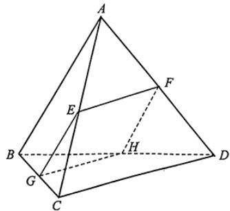

填空题
按本区原卷题号顺序排列。
静安 · 第1题 ★☆☆☆☆ · 教师预估
设集合A = {1, 3, 5, 7}, B = {2, 3, 4, 5}，则A ∩ B = .
考点：交集定义。
难度依据：有限集合交集；交集定义
展开答案与解析
静安 · 第2题 ★☆☆☆☆ · 教师预估
不等式 ∣2x−1∣<3 的解集为
考点：去绝对值求区间。
难度依据：绝对值不等式；去绝对值求区间
展开答案与解析
静安 · 第3题 ★☆☆☆☆ · 教师预估
已知i是虚数单位，(m+i)(1−2i)是纯虚数，则实数m的值为
考点：实部为零且虚部非零。
难度依据：复数运算与纯虚数；实部为零且虚部非零
展开答案与解析
静安 · 第4题 ★☆☆☆☆ · 教师预估
设 {an} 是等差数列， a1=−6,a3=0 ，则该数列的前8项的和 S8 的值为 .
考点：由两项求公差再求和。
难度依据：等差数列求和；由两项求公差再求和
展开答案与解析
静安 · 第5题 ★☆☆☆☆ · 教师预估
到点 F1(−3,0),F2(3,0) 距离之和为10的动点P的轨迹方程为
考点：由焦距和距离和求参数。
难度依据：椭圆定义与标准方程；由焦距和距离和求参数
展开答案与解析
静安 · 第6题 ★★☆☆☆ · 教师预估
在△ABC中，已知 BC=5,AC=4,A=2B ，则cosB的值为
考点：代入A=2B求余弦。
难度依据：正弦定理与倍角；代入A=2B求余弦
展开答案与解析
静安 · 第7题 ★☆☆☆☆ · 教师预估
已知物体的位移d（单位：m）与时间t（单位：s）满足函数关系 d=5sint−2cost ，则该物体在t=2π(s) 时刻的瞬时速度为 (m/s)
考点：对位移求导后代入时刻。
难度依据：瞬时速度与导数；对位移求导后代入时刻
展开答案与解析
静安 · 第8题 ★★☆☆☆ · 教师预估
若用t替换命题“对于任意实数d，有 d˙2≥0 ，且等号当且仅当d = 0时成立”中的d，即可推出平均值不等式“任意两个正数的算术平均值不小于它们的几何平均值，且等号当且仅当这两个正数相等时成立”.则t =
考点：构造平方差并考察等号。
难度依据：平方非负推导均值不等式；构造平方差并考察等号
展开答案与解析
静安 · 第9题 ★★☆☆☆ · 教师预估
以双曲线 4x2−my2=1 的离心率为半径，以右焦点为圆心的圆与双曲线的渐近线相切，则m的值为
考点：焦点到渐近线距离等于离心率。
难度依据：双曲线渐近线与圆相切；焦点到渐近线距离等于离心率
展开答案与解析
静安 · 第10题 ★★☆☆☆ · 教师预估
如图所示，小明和小宁家都住在东方明珠塔附近的同一幢楼上，小明家在A层，小宁家位于小明家正上方的B层，已知 AB=a .小明在家测得东方明珠塔尖的仰角为α，小宁在家测得东方明珠塔尖的仰角为β，则他俩所住的这幢楼与东方明珠塔之间的距离d =

考点：两层高度差与正切列式。
难度依据：仰角测距；两层高度差与正切列式
展开答案与解析

静安 · 第11题 ★★★☆☆ · 教师预估
本题资料或解析有待核事项，预览不可作为已审定成品。
记f(x)=x2+(a2+b2−1)x+a2+2ab−b2。若函数y=f(x)是偶函数，则该函数图象与y轴交点的纵坐标的最大值为______。
考点：由偶函数消一次项后参数化求最值。
难度依据：偶函数与二次型最值；由偶函数消一次项后参数化求最值
核查说明：仅恢复题干；解析和其他题目未全面校净、未数学终审。；题干函数表达式严重损坏，原解中可见函数，须回原卷核对后补齐。
展开答案与解析
静安 · 第12题 ★★☆☆☆ · 教师预估
已知lg x1⋅ lg x2､ lg x3､ lg x4, ､ lg x5 是从大到小连续的正整数，且 (lgx4)2<lgx1⋅lgx5 ，则 ∣x1 1的最小值为
考点：设中间项建立整数约束。
难度依据：连续整数对数与最值；设中间项建立整数约束
展开答案与解析
选择题
按本区原卷题号顺序排列。
静安 · 第13题 ★☆☆☆☆ · 教师预估
设 [a,b∈R, ，则 ∗a+b>0∗ 是 ρˉ∗a>0 且 .b>0∗ 的（ ）
A. 充分非必要条件
B. 必要非充分条件
C. 充要条件
D. 既非充分又非必要条件
考点：用反例与不等式性质判断。
难度依据：充分必要条件判断；用反例与不等式性质判断
展开答案与解析
静安 · 第14题 ★★☆☆☆ · 教师预估
污水处理厂通过清除污水中的污染物获得清洁用水并生产肥料.该厂的污水处理装置每小时从处理池清除掉12%的污染残留物.要使处理池中的污染物水平降到最初的10%，大约需要的时间为（ ）（参考数据： lg0.88≈−0.0555)
A. 14小时
B. 18小时
C. 20小时
D. 24小时
考点：建立指数模型并换底求时间。
难度依据：指数衰减与对数模型；建立指数模型并换底求时间
展开答案与解析
静安 · 第15题 ★★★★☆ · 教师预估
我国古代数学著作《九章算术》中将四个面都是直角三角形的空间四面体叫做“鳖臑”.如图是一个水平放置的 △ABC,CD⊥AB,∠A=30∘,∠B=45∘ .现将 Rt△ACD%˙CD 折起，使点A移动到点A′，使得空间四面体A′BCD恰好是一个“鳖臑”，则二面角A′ −CD−B的大小为（ ）

A. 60∘
B. 90∘
C. arctan2
D. arccos33
考点：利用各面直角约束分类求二面角。
难度依据：四面体折叠与二面角；利用各面直角约束分类求二面角
展开答案与解析

静安 · 第16题 ★★☆☆☆ · 教师预估
在四棱锥 P−ABCD 中， AB=(4,−2,3),AD=(−4,1,0),AP=(−6,2,−8) ，则该四棱锥的高为（ ）
A. 4
B. 3
C. 2
D. 1
考点：法向量与投影求点面距离。
难度依据：法向量求棱锥高度；法向量与投影求点面距离
展开答案与解析
解答题
按本区原卷题号顺序排列。
静安 · 第17题 ★★★☆☆ · 教师预估
设函数 ∇⋅f(x)=x+x4,x∈(−∞,0)∪(0,+∞).
(1) (6分)求函数 ⋅y=f(x) 的单调区间；
(2) (8分)求不等 ∄f(x)<2x 的解集.
考点：（1）导数求单调区间；（2）化分式不等式分区间求解。
难度依据：导数单调性与分式不等式；（1）导数求单调区间；（2）化分式不等式分区间求解
展开答案与解析
静安 · 第18题 ★★★☆☆ · 教师预估
本题资料或解析有待核事项，预览不可作为已审定成品。
已知向量 a=(cos23x,sin23x),b=(cos2x,−sin2x) ，且 x∈[0,2π]
(1) (6分)求→a ⋅→b 及 a+b ；
(2) (8分) iLf(x)=a⋅b−a+b ，求函数 y=f(x) 的最小值.
考点：（1）坐标数量积与模；（2）倍角换元求最值。
难度依据：向量数量积与三角最值；（1）坐标数量积与模；（2）倍角换元求最值
核查说明：第（1）问向量和的模符号缺失，原解有模，须核原卷。
展开答案与解析
静安 · 第19题 ★★★★☆ · 教师预估
如图所示，正三棱锥A−BCD的侧面是边长为2的正三角形.

(1) (4分)求正三棱锥A − BCD的体积V；
(2) (10分)设E､F､G分别是线段AC､AD､BC的中点.
求证： 1◯CD//. 平面EFG；②若平面EFG交BD于点H，则四边形EFHG是正方形.
考点：（1）求高与体积；（2）①证明线面平行②证明截面正方形。
难度依据：正四面体体积与截面；（1）求高与体积；（2）①证明线面平行②证明截面正方形
展开答案与解析
静安 · 第20题 ★★★★☆ · 教师预估
如图的封闭图形的边缘由抛物线Γ和垂直于拋物线对称轴的线段AB组成.已知 ∣AB=4 ，拋物线的顶 点到线段AB所在直线的距离为2.

(1) (4分)请用数学符号语言表达这个封闭图形的边缘；
(2) (6分)在该封闭图形上截取一个矩形CDEF，其中点C､D在线段AB上，点E､F抛物线Γ上.求以矩形CDEF为侧面，CF为母线的圆柱的体积最大值；
(3) (8分)求证：抛物线Γ的任何两条相互垂直的切线的交点都在同一条直线上.
考点：（1）建立图形方程；（2）圆柱体积最值；（3）垂直切线交点轨迹。
难度依据：抛物线模型与切线；（1）建立图形方程；（2）圆柱体积最值；（3）垂直切线交点轨迹
展开答案与解析
静安 · 第21题 ★★★★★ · 教师预估
本题资料或解析有待核事项，预览不可作为已审定成品。
如果函数 y=f(x) 满足以下两个条件，我们就称函数y = f (x)为U型函数.
①对任意的 x∈[0,1] ，有 f(x)≥1,f(1)=3;
②对于任意的x, y∈[0,1] ，若 x˙+y≤1 ，则 f(x+y)≥f(x)+f(y)−1
(1) (4 4)y=3x 是U型函数；
(2) (6分)U型函数y = f (x)在[0, 1]上为增函数；
(3) (8分)对于U型函数 y=f(x) ，有 f(3n1)≤3n2+1 （n为正整数）.
考点：（1）验证定义；（2）由定义证明单调；（3）迭代不等式估计函数值。
难度依据：U型函数性质与迭代不等式；（1）验证定义；（2）由定义证明单调；（3）迭代不等式估计函数值
核查说明：各小问题干证明提示可能缺字；原解使用增函数概念需明确非严格单调。
展开答案与解析